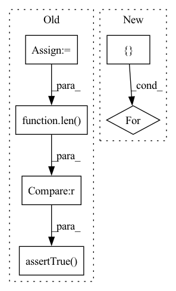

Pattern ID :18380
Before Change
r = requests.get(path)
r.raise_for_status()
d = r.json()
o = ModelTags(d)
for kind in ["library", "language", "license", "dataset", "pipeline_tag"]:
self.assertTrue(len(getattr(o, kind).keys()) > 0 )
class DatasetTagsTest(unittest.TestCase):
@unittest.skip(After Change
tags = ModelTags(res.json())
// Check existing keys to get notified about server-side changes
for existing_key in [
"dataset",
"language",
"library",
"license",
"pipeline_tag":
self.assertGreater(len(getattr(tags, existing_key).keys()), 0)
class DatasetTagsTest(unittest.TestCase):In pattern: SUPERPATTERN
Frequency: 3
Non-data size: 6
Instances Fragment ID: 60155012
Project Name: huggingface/huggingface_hub
Commit Name: 6d360e377d229af639adfa607dbc26040ee2ff7f
Time: 2023-01-19
Author: lucainp@gmail.com
File Name: tests/test_endpoint_helpers.py
M Class Name: ModelTagsTest
N Class Name: ModelTagsTest
M Method Name: test_tags(1)
N Method Name: test_tags(1)
M Parent Class: unittest.TestCase
N Parent Class: unittest.TestCase
M File Name: tests/test_endpoint_helpers.py
N File Name: tests/test_endpoint_helpers.py
M Start Line: 147
M End Line: 156
N Start Line: 148
N End Line: 162
Before Change
path = f"{_api.endpoint}/api/datasets-tags-by-type"
r = requests.get(path)
r.raise_for_status()
d = r.json()
o = DatasetTags(d)
for kind in [
"language",
"multilinguality",
"language_creators",
"task_categories",
"size_categories",
"benchmark",
"task_ids",
"license",
]:
self.assertTrue(len(getattr(o, kind).keys()) > 0 )
After Change
self.assertEqual(len(getattr(tags, missing_key).keys()), 0)
// Check existing keys to get notified about server-side changes
for existing_key in [
"benchmark",
"language",
"license",
"size_categories",
"task_categories",
"task_ids":
self.assertGreater(len(getattr(tags, existing_key).keys()), 0)
Fragment ID: 60154998
Project Name: huggingface/huggingface_hub
Commit Name: 6d360e377d229af639adfa607dbc26040ee2ff7f
Time: 2023-01-19
Author: lucainp@gmail.com
File Name: tests/test_endpoint_helpers.py
M Class Name: DatasetTagsTest
N Class Name: DatasetTagsTest
M Method Name: test_tags(1)
N Method Name: test_tags(1)
M Parent Class: unittest.TestCase
N Parent Class: unittest.TestCase
M File Name: tests/test_endpoint_helpers.py
N File Name: tests/test_endpoint_helpers.py
M Start Line: 165
M End Line: 181
N Start Line: 167
N End Line: 187
Before Change
max_dataset_size if num_samples == "max" else num_samples
)
_src_features = randomly_sample(src_features, _num_samples)
_target_features = randomly_sample(
target_features, _num_samples
)
self.assertTrue(
len(_src_features) == len(_target_features) == _num_samples
)
if src_dataset_size == target_dataset_size:
correct_score = -loss_fn(
src_features, target_features
).item()After Change
for kernel_scales in [1, utils.get_kernel_scales()]:
for src_dataset_size in [100, 500]:
for target_dataset_size in [100, 500]:
for batch_size in [ 32, 128, 256, 512:
for bandwidth in [None, 1]:
loss_fn = MMDLoss(
kernel_scales=kernel_scales,
bandwidth=bandwidth, Fragment ID: 60155011
Project Name: kevinmusgrave/pytorch-adapt
Commit Name: 8b24ec7a3c13a356f543a041e75aa24fe1305a03
Time: 2022-04-01
Author: tkm45@cornell.edu
File Name: tests/validators/test_mmd_validator.py
M Class Name: TestMMDValidator
N Class Name: TestMMDValidator
M Method Name: test_mmd_validator(1)
N Method Name: test_mmd_validator(1)
M Parent Class: unittest.TestCase
N Parent Class: unittest.TestCase
M File Name: tests/validators/test_mmd_validator.py
N File Name: tests/validators/test_mmd_validator.py
M Start Line: 17
M End Line: 64
N Start Line: 18
N End Line: 52